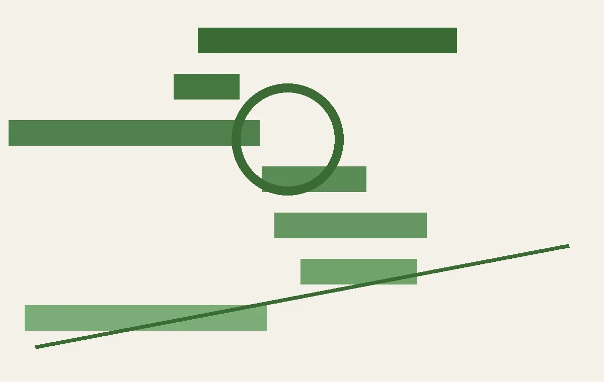
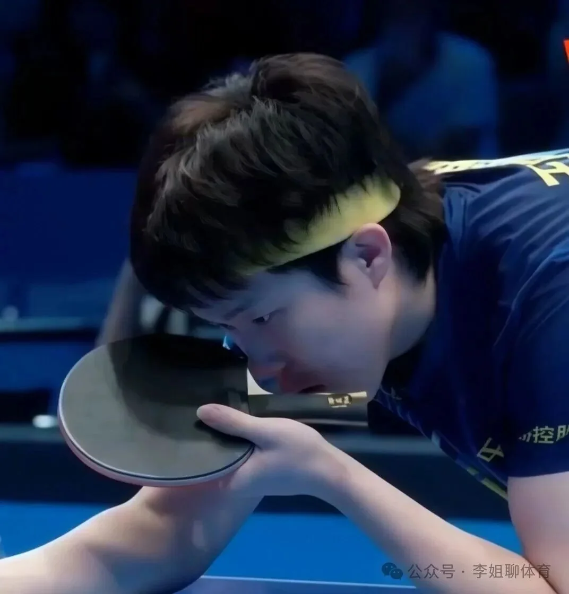

AI的阴影与光明：从抗拒到落地
当AI工具无孔不入地渗透生活，有人选择逃离，有人直面电网危机；而在模型竞赛中，Opus 5和桌面Agent正推动AI走向更便宜、更开放。
把每天真正值得理解的事情，写成可以慢慢读的文章，也做成可以随时听的播客。
当AI工具无孔不入地渗透生活，有人选择逃离，有人直面电网危机；而在模型竞赛中，Opus 5和桌面Agent正推动AI走向更便宜、更开放。

从纽约乡村学区引入人形机器人，到四川学龄人口地图，再到国学启蒙与北卡罗来纳州读写改革，伊恩带你拆解教育公平的落地路径。

从山东魏桥的乒超两连胜到全民健身计划升级，再到CBA转会动态、女子百球赛最高分纪录，以及英联邦运动会上的亲情故事，我们还原赛场内外，拆解战术与生活。